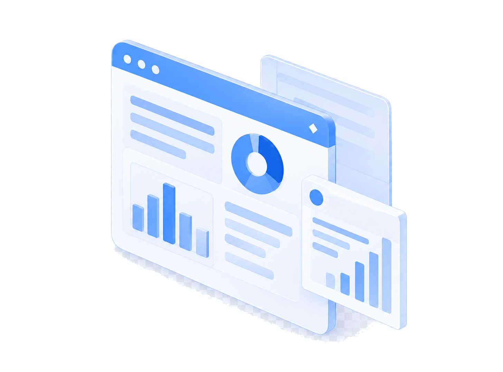

INDUSTRY SOLUTIONS
산업별 맞춤형 보안 진단
공공, 금융, 기업 환경에 맞는 보안 진단을 제공합니다.
공공
주요정보통신기반시설 점검
금융
금융권 시스템 취약점 진단
기업
ISO 27001 · ISMS-P 대응
국방
K-RMF 기반 보안 진단
VULNERABILITY SCAN
자동화 진단 + 전문 분석
자동화된 진단 도구와 전문 인력으로 취약점을 정확하게 분석합니다.
1
자동화 진단
빠르고 정확한 취약점 탐지
2
전문 분석
숙련된 전문가의 심층 분석
Result
정확한 취약점 판정
오탐은 줄이고, 실제 위험은 놓치지 않습니다
PENETRATION TESTING
실전 기반 모의해킹
검증된 도구 기반 모의해킹 서비스를 제공합니다.
1
대상 설정
Target Setup
대상 URL 및 테스트 범위를 설정합니다.
2
공격 표면 분석
Discovery
웹 페이지를 크롤링하고 애플리케이션의 엔드포인트를
식별합니다.
3
보안 취약점 스캔
Security Scanning
수동 분석 및 승인된 능동 스캔을 수행하여 보안 취약점을
탐지합니다.
4
검증 및 보고서 작성
Validation & Reporting
탐지 결과를 검토하고 취약점을 검증한 후, 보안 진단
보고서를 생성합니다.
1
대상 설정 및 범위 지정
Target Setup
대상 URL, 테스트 범위 및 목표를 설정하고 필요한 인증
정보와 문서를 제공합니다.
2
공격 표면 분석 및 공격 경로 탐색
Discover & Explore
AI 에이전트가 웹 페이지와 API 엔드포인트를 분석하고
잠재적인 공격 경로를 탐색합니다.
3
AI 기반 공격 실행 및 취약점 검증
AI Attack & Validate
AI 에이전트가 공격 전략을 수행하고 취약점의 실제 악용
가능성을 검증하여 증거를 수집합니다.
4
결과 분석 및 보고서 작성
Report & Remediate
검증된 취약점의 재현 절차, 영향 및 개선 방안을 포함한
보고서를 생성합니다.
CONSULTING & REPORTING
진단 결과부터 개선까지
취약점 분석부터 개선 방향과 조치 검증까지 지원합니다.
분석 리포트
자산별 위험도와 근거를 함께 제공하는 취약점 상세
분석
개선 방안
환경에 맞는 조치 가이드 제시
조치 검증
재진단으로 개선 여부를 직접 확인
지속 관리
정기 진단으로 보안 상태를 꾸준히 추적
